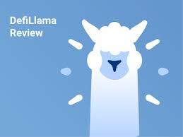

Decoding the Crypto Oracle: How I Learned to Stop Worrying and Love DefiLlama's Swap Data
SoSwap DefiLlama , there I was, knee-deep in a particularly stubborn DeFi project. I'd stumbled across this amazing new token, promising to revolutionize… well, something. Let's just say it involved sentient potatoes and NFTs. Don't ask. The point is, I needed a price. Not some flaky CoinGecko estimate, but a real, honest-to-goodness price based on actual trades. That's when DefiLlama's swap data became my unlikely hero.
Now, I'm not a hardcore quant. My Excel skills peak at making pretty charts (and even then, it’s debatable). So when I first encountered DefiLlama's wealth of information – all those swirling graphs, chains, and protocols – I felt a little like Neo in the Matrix, overwhelmed by a torrent of data. It was a beautiful, terrifying deluge.
But after a few hours (okay, maybe a few days) of wrestling with the interface, I started to appreciate its power. It’s like having a backstage pass to the entire DeFi ecosystem. You can see exactly where different tokens are trading, on which exchanges, and at what prices. This isn't just a price; it's a price contextualized. You're not just getting a number, you're getting a glimpse into the market's actual dynamics.
The thing is, getting a "true" price in crypto is a bit of a fool's errand. Centralized exchanges often manipulate order books, and even decentralized exchanges have their own quirks. It's a Wild West out there, so using just one source – even a reputable one – for your price discovery feels inherently risky. That's where DefiLlama's advantage shines – you can triangulate. By looking at swap data across multiple chains and DEXs, you're getting a much more robust and representative picture.
It's not always perfect, of course. Liquidity on some smaller DEXs can be incredibly thin, leading to potentially skewed prices. Sometimes, the data lags a bit – which is understandable given the decentralized nature of everything. I've even caught myself questioning the data's accuracy on more than one occasion. "Is this truly representative?" I'd wonder, sipping my coffee, staring blankly at the screen. But that healthy skepticism is part of the process. It forces you to dig deeper, to cross-reference, and ultimately to become a more informed investor.
Thinking about it now, it reminds me of a detective piecing together clues. Each swap is a breadcrumb, leading you closer to a more complete understanding of the token's value. DefiLlama acts as your trusty magnifying glass, highlighting those tiny details that might otherwise escape notice. It’s far from a perfect solution, but it's an undeniably powerful tool for navigating the often-murky waters of decentralized finance.
So, did I find the "true" price of that sentient potato NFT token? Well, even with DefiLlama, the answer is complex. I got a more nuanced understanding of its market position, its liquidity issues, and its overall volatility. It was a journey, not a destination. The experience taught me more than just price discovery; it was a valuable lesson in critical thinking, data analysis, and the always-exciting (and often frustrating) reality of the decentralized finance landscape. And frankly, that’s far more valuable than any single number on a screen. Plus, I learned a lot about sentient potatoes. Who knew?

Decoding the Crypto Chaos: My Accidental Journey with DeFiLlama's Swap
So, there I was, scrolling through Twitter (as one does), drowning in a sea of JPEGs and questionable financial advice, when a tweet about DeFiLlama's swap feature caught my eye. Now, I’m no crypto guru – I’m more of a "cautiously optimistic, slightly terrified" kind of investor. Think Forrest Gump stumbling into a Wall Street trading floor. But the idea of real-time price analysis for decentralized exchanges? That sounded almost…legitimate. Almost.
My initial reaction was a healthy dose of skepticism, naturally. I’ve seen enough "get-rich-quick" schemes to fill a small library (or, more accurately, a very large hard drive). The crypto world is a rollercoaster of hype cycles, rug pulls, and enough jargon to make your head spin faster than a Shiba Inu on espresso. But, hey, curiosity killed the cat, right? And I wasn’t particularly attached to this cat, so I decided to dive in.
DeFiLlama, for the uninitiated (like my former self), is essentially a comprehensive aggregator of decentralized finance (DeFi) data. Think of it as a Google for all things DeFi – a sprawling, constantly updating encyclopedia of protocols, tokens, and…well, everything else crypto. The "Swap" feature, however, is the real star of the show. It allows you to quickly compare the prices of tokens across various decentralized exchanges (DEXs) – like Uniswap, SushiSwap, PancakeSwap, and a whole bunch of others I’m still struggling to pronounce.
Using it is surprisingly intuitive, which was a relief. I was half-expecting a coding challenge worthy of a Silicon Valley startup, but it’s actually pretty user-friendly. You simply input the token pair you're interested in, and bam, you get a real-time snapshot of its price across different DEXs. It's like having a mini-oracle whispering price insights straight into your browser.
Now, this isn’t some magic bullet. It's not going to suddenly make you a crypto billionaire overnight. (Though, wouldn't that be nice?) What it does do is provide a valuable layer of transparency and price discovery that was previously a lot more challenging to obtain. Knowing that Token X is 5% cheaper on DEX Y than on DEX Z is crucial information for informed decision-making, especially in the fast-paced world of DeFi.
And that's where the real value lies. It's not about chasing the absolute best price every single time – that’s an exhausting game of whack-a-mole. It's about having the tools to make more informed decisions, to understand market dynamics better, and to reduce the risk of getting, shall we say, "unpleasantly surprised." Because let’s be honest, the last thing you want in the crypto world is an unwelcome surprise. Especially one involving a significant chunk of your hard-earned money.
So, here I am, a few hours and several browser tabs later, feeling a little smarter, a little less terrified, and a whole lot more grateful for intuitive tools like DeFiLlama's Swap. My journey wasn’t about finding the holy grail of crypto arbitrage (though, hey, who knows what the future holds?), it was about gaining a better understanding of this wild, chaotic, and occasionally rewarding landscape. And that, my friends, is a journey worth taking. Even if it involves more than a few accidental clicks and a whole lot of caffeine.
Decoding the DeFi Llama: A Tangled Web of Token Values (and My Mild Panic)
Okay, confession time. I’m not a DeFi guru. I’m more of a “enthusiastic beginner who occasionally panics about losing all their money” type. So when a friend casually mentioned "checking token valuation metrics on DeFiLlama," I felt a familiar knot tighten in my stomach. It sounded like something only people who understand quantum physics and ancient Sumerian could comprehend. But I was intrigued, mostly because the alternative – blindly throwing money at shiny new tokens – felt even less appealing.
DeFiLlama, for the uninitiated (like me, until recently), is essentially a massive aggregator of Decentralized Finance data. Think of it as a super-powered spreadsheet, but instead of tracking your grocery bills, it’s tracking billions of dollars swirling around in the crypto-verse. And one of its most useful features? The ability to look at different valuation metrics for various DeFi tokens.
Now, the problem with these metrics – and this is where my initial panic kicked in – is that they're…a lot. You've got market cap, fully diluted valuation (FDV), circulating supply, total value locked (TVL)...it’s a veritable alphabet soup of acronyms. Each one tells a slightly different story, and understanding the nuances requires, well, more than a casual glance at a webpage.
Take FDV, for example. I initially thought it was the be-all and end-all of token valuations – the ultimate truth. It considers all the tokens that will ever exist. Sounds solid, right? Wrong. Or at least, partially wrong. Because what if a project drastically reduces its token supply in the future? Suddenly, that FDV looks…inflated. It becomes less of a reflection of current value and more of a hypothetical projection. See? Already I'm questioning everything!
Then there's TVL. This metric is basically a measure of the total amount of assets locked in a DeFi protocol. High TVL often suggests a healthy ecosystem – people are using the protocol, which is generally a good sign. But it's not a guaranteed golden ticket. A high TVL might simply mean a lot of money is locked up, but the actual value of the underlying token could be dwindling. Imagine a beautiful, opulent mansion with nobody living in it – impressive to look at, but not necessarily thriving.
So, what’s the takeaway? After wrestling with DeFiLlama for a few hours (okay, maybe more like half a day), I realized something crucial: there’s no magic bullet. No single metric will tell you definitively whether a token is a diamond in the rough or a worthless piece of digital glitter. These metrics are tools, not oracles. They're pieces of a much larger puzzle, and you need to look at them in context, alongside other information like the project's roadmap, team, and community engagement.
This whole experience reminded me of trying to assemble IKEA furniture – frustrating, sometimes confusing, but ultimately rewarding if you persevere (and don’t lose any vital screws, metaphorically speaking, in the crypto world). It’s messy, it’s complicated, and it demands critical thinking, not blind faith. The journey of understanding token valuations isn’t about finding the "perfect" metric; it's about developing a nuanced understanding of how different metrics interplay and how to incorporate them into a broader assessment of the project’s potential. And that, my friends, is a journey well worth undertaking, even if it involves a healthy dose of existential dread along the way. Now, if you’ll excuse me, I have some more DeFiLlama charts to wrestle with. Wish me luck!
Decoding the DeFi Oracle: My Messy Journey with Swap Price Spreads on DefiLlama
So, you know that feeling when you're at the grocery store, comparing the price of, say, organic kale at two different stands? One's charging $5, the other $7. You're like, "Whoa, that's a hefty spread!" Right? Well, that same principle applies to the wild, wild west of decentralized finance (DeFi). Except instead of kale, we're talking about, well, everything. And instead of grocery store stands, we have decentralized exchanges (DEXs).
Recently, I've been obsessed with figuring out how to effectively evaluate price spreads on these DEXs, and DefiLlama became my trusty sidekick (or perhaps slightly unreliable, caffeine-addicted sidekick) in this quest. I figured, "Hey, DefiLlama shows all the DEX data – surely it holds the key to unlocking this price spread enigma!" Spoiler alert: it’s not quite that simple, but the journey was enlightening.
My initial approach was, shall we say, naive. I just looked at the numbers – the token prices across different DEXs. Easy peasy, right? Wrong. The sheer volume of data was overwhelming. It's like trying to find a specific grain of sand on a beach the size of Texas. Each DEX lists the price differently, some show last trade prices, others use aggregators... and then there's the whole issue of slippage.
Slippage, for the uninitiated, is that annoying little price jump that happens when you try to execute a large trade. It's like trying to buy a limited-edition sneaker – the price suddenly inflates as demand spikes. So, comparing prices directly between DEXs without considering slippage is, frankly, a bit like comparing apples and oranges… coated in glitter.
Then I stumbled upon the truly insightful part of DefiLlama (yes, there’s more than just pretty charts!). It wasn’t just about the raw numbers, it was about understanding the context. What’s the trading volume on each DEX? Is it a highly liquid pool or a small, niche one? What's the underlying asset's volatility? Is the token a hyped meme coin or a stable, boring one (and the latter is often more preferable for avoiding wild spread fluctuations)? Suddenly, the raw price discrepancies made more sense. A huge spread on a low-volume DEX wasn't necessarily bad; it just reflected a lack of liquidity.
This whole exploration made me realize something profound – DeFi is far from perfect. It's a constantly evolving system with its own unique set of complexities. Trying to find a single, perfect method to evaluate price spreads is a bit like searching for the Holy Grail – you might find pieces of the puzzle, but a complete solution remains elusive.
The truth is, there's no magic formula. DefiLlama is a powerful tool, yes, but it requires careful interpretation and a healthy dose of critical thinking. You need to dig deeper, to consider the wider context. Think of it as being a detective, not just a number cruncher.
So, where does this leave me? Well, I'm still on this journey. I've learned a lot, but I'm sure there's still much to discover. This whole experience has been more of a messy, exciting exploration than a clear-cut solution. The kale analogy still holds true. Sometimes, the seemingly insignificant spread between two stands actually tells you something interesting about the market itself. The same holds true for the vast landscapes of DeFi. And that's something worth pondering over, even if it means a few more hours spent staring at spreadsheets.
Chasing Ghosts in DeFi: My (Slightly Chaotic) Hunt for Arbitrage with DefiLlama
Remember that time in college when I tried to buy low and sell high on those vintage band t-shirts? Let’s just say, my entrepreneurial spirit vastly outweighed my market research skills. The result? A closet full of questionable fashion choices and a slightly bruised ego. Fast forward a few years, and I'm still chasing that elusive "buy low, sell high" dream, only now it’s in the wild west of decentralized finance (DeFi). And my weapon of choice? DefiLlama.
DefiLlama, for the uninitiated, is like a sprawling, constantly updating spreadsheet of all things DeFi. It shows you the total value locked (TVL) in various protocols, the interest rates offered, and a whole bunch of other juicy data points. And, if you squint hard enough, it can even whisper secrets of arbitrage opportunities. Arbitrage, for those who aren’t fluent in financial jargon, is basically profiting from price differences of the same asset across different markets. It's like finding a $20 bill on the sidewalk—except instead of a $20 bill, it's a few extra crypto bucks.
My journey into DefiLlama-fueled arbitrage has been… well, let’s call it "educational." At first, I was wildly optimistic. I envisioned myself as some kind of digital-age Midas, effortlessly transforming data into riches. I spent hours pouring over charts, comparing exchange rates on various DEXs (decentralized exchanges), and calculating potential profits with the precision of a brain surgeon performing a delicate operation. The reality? It's a bit less glamorous.
First off, the sheer volume of information can be overwhelming. It’s like trying to find a specific grain of sand on a beach the size of Texas. Then there's the gas fees – those pesky transaction costs on the blockchain that can quickly eat into your profits. Sometimes, you find a seemingly lucrative arbitrage opportunity, only to discover that the gas fees obliterate any potential gains. It’s a bit like discovering a pot of gold at the end of a rainbow, only to find out the pot is made of lead and the gold is actually glitter.
But, here's the thing: despite the occasional disappointment, I've also had some small victories. Finding a few cents (or occasionally a few dollars!) of extra profit is strangely satisfying. It’s not about getting rich quick; it’s about the intellectual puzzle, the thrill of the hunt. It's like solving a complex Sudoku – only the reward is a slightly larger crypto balance.
I've learned that DefiLlama is not a magic money machine. It's a tool, and like any tool, its effectiveness depends on the skill and knowledge of the user. You need to understand the nuances of different DEXs, the risks involved, and the importance of properly managing gas fees. It’s a learning process, filled with both triumphs and failures. And frankly, sometimes it feels more like chasing ghosts than anything else.
So, where am I now? Still learning, still exploring, and still chasing those elusive arbitrage opportunities. I haven’t quit my day job, and my closet still holds a few fashion crimes from my past. But I've learned something valuable: the journey itself, the process of learning and adapting within this rapidly changing landscape, is often more rewarding than the destination. And sometimes, finding those few extra crypto bucks feels like a little victory in a world where most victories are measured in thousands. Maybe, just maybe, someday I'll even make enough to replace those questionable band t-shirts. One can dream, right?

DefiLlama: My Accidental Love Affair with a Data Kraken
Remember that feeling when you accidentally stumble upon a hidden gem? Like finding a vintage record store tucked away on a cobbled street, brimming with forgotten treasures? That's how I felt discovering DefiLlama. I wasn't actively searching for a DeFi research tool – I was, frankly, knee-deep in a spreadsheet trying to manually track TVL across different protocols. It was, to put it mildly, a soul-crushing experience, akin to watching paint dry, but with more Excel errors.
Then, a friend casually mentioned DefiLlama. “It's like Google, but for DeFi,” they said, and while initially skeptical (Google for DeFi? Sounds almost too good to be true!), I decided to give it a shot. And boy, was I blown away.
Swap DefiLlama isn't just a website; it's a data kraken, a majestic beast of information, tirelessly slurping up real-time data from the DeFi ocean and presenting it in a digestible (and often visually stunning) format. For a trader like me, obsessed with tracking trends and identifying emerging opportunities, it's become an indispensable tool. I can quickly scan TVL changes, compare protocol performance, and even dive deep into individual token metrics – all in one place.
Now, let's be honest, it's not perfect. There are times when I find myself squinting at charts, questioning the accuracy of a specific data point, or wrestling with the sheer volume of information. It's a bit like trying to drink from a firehose – exhilarating, but potentially overwhelming. And sometimes, the sheer breadth of information can be a bit distracting. I've caught myself losing hours down rabbit holes of obscure protocols, completely forgetting the initial research goal. Anyone else relate?
But those minor frustrations are vastly outweighed by its utility. For instance, I recently used DefiLlama to identify a small, relatively unknown lending protocol experiencing significant TVL growth. This wasn't something I would have noticed using traditional methods. The data, coupled with my own market analysis, led me to a small, but very profitable, trade. That, my friends, is the magic of DefiLlama. It empowers you to spot the anomalies, the hidden gems, the whispers of future trends before they become the roaring headline news.
It's also helped me avoid potential pitfalls. By observing TVL trends and monitoring liquidity pools, I’ve been able to avoid several potentially risky investments. It's like having a seasoned, albeit slightly robotic, mentor whispering warnings in your ear.
So, is DefiLlama a silver bullet? Absolutely not. It's a tool, and like any tool, its effectiveness depends on the user’s skill and understanding. You still need your own critical thinking skills, your own market analysis, and a healthy dose of skepticism. But it significantly elevates your research capabilities, providing a foundation upon which you can build your own trading strategies.
This isn't a glowing, uncritical endorsement; it's a reflection on my personal experience. My journey with DefiLlama has been one of discovery, frustration, and ultimately, gratitude. It's been a reminder that even in the chaotic world of decentralized finance, there are powerful tools that can level the playing field, turning data into insight, and insight into opportunity. And honestly? Finding that hidden gem of a tool? That's a feeling far more rewarding than any spreadsheet ever could offer.
Unearthing Crypto Gems: My Accidental Love Affair with DefiLlama's Swap Feature
So, picture this: I'm knee-deep in spreadsheets, trying to decipher which obscure altcoin is going to be the next Dogecoin (don't judge, we've all been there). My eyes are blurring, my coffee is cold, and frankly, I'm starting to question my life choices. Suddenly, a friend casually mentions DefiLlama. "It's like… a Yelp for DeFi," he said, and honestly, I snorted. Yelp for decentralized finance? That sounded about as exciting as watching paint dry.
But, desperate times call for desperate measures, right? I figured, what the heck? And that's how I stumbled upon DefiLlama's swap feature, a rabbit hole that's surprisingly addictive and (dare I say it?) useful.
Initially, I was just poking around. The interface is fairly straightforward – you can see the total value locked (TVL) across various DeFi protocols, which gives you a general sense of their popularity and activity. But the swap section is where things get interesting. It's not just a list of exchanges; it's a window into the less-traveled paths of the crypto world. You can see lesser-known DEXs (decentralized exchanges), often with smaller trading volumes and potentially, undervalued tokens.
Now, before you get all starry-eyed about getting rich quick, let's be realistic. This isn't some magic money printer. Finding undervalued tokens takes time, research, and – let's be honest – a hefty dose of luck. It's more like panning for gold than hitting the jackpot at a casino. You'll sift through a lot of sand before you find anything sparkly.
One thing I quickly learned is that low TVL doesn't automatically equate to an undervalued gem. Some projects are simply small, niche, or even downright dodgy. I spent a good few hours poring over projects with barely any volume, only to discover they were basically ghost towns. Talk about a waste of perfectly good caffeine.
But then, I started seeing patterns. I noticed certain DEXs consistently featuring tokens with interesting use cases, even if their trading volume was relatively low. This led me to delve deeper into the projects themselves – checking their whitepapers (ugh, I know), looking at their community engagement, and even peering into their code (okay, I didn't actually peer into the code, I’m not a programmer). The more I dug, the better I got at spotting potential.
Is this a foolproof method? Absolutely not. I've still got plenty of "lessons learned" scars from my explorations. I've definitely made some questionable investments (let's just say I'm now a firm believer in diversification).
But the journey has been far more enlightening than I initially anticipated. It's not just about finding the next big thing; it's about understanding the DeFi ecosystem, its nuances, and its incredible potential for innovation. It's about developing a critical eye and learning to evaluate projects based on their fundamentals rather than hype. And honestly, that’s a valuable skill, regardless of how many crypto riches I accumulate (or don't).
So, if you're looking for a fun and potentially rewarding way to explore the world of DeFi, give DefiLlama's swap feature a shot. Just remember to approach it with caution, healthy skepticism, and a willingness to learn from your mistakes. It's a journey, not a sprint, and the real treasure might be the knowledge you gain along the way. Now, if you'll excuse me, I have some more "sand" to sift through…
Decoding the DeFi Oracle: My Tangled Journey with DefiLlama's On-Chain Data
Okay, confession time. I'm not a crypto wizard. I'm more of a "enthusiastic amateur who sometimes accidentally makes a profit" kind of person. So when I first stumbled upon DefiLlama and its seemingly endless sea of on-chain data, I felt a bit like Indiana Jones facing a temple filled with booby-trapped idols – exciting, but potentially very, very dangerous. My initial thought? "Whoa, this is way more information than I need or can even comprehend." But, like any good treasure hunter, I had to try.
What exactly is DefiLlama’s on-chain data, anyway? Think of it like this: the decentralized finance (DeFi) world is a vast, bustling marketplace – but unlike your friendly neighborhood grocery store, it doesn’t have a neatly organized spreadsheet detailing every transaction, every token swap, every… well, everything. That's where DefiLlama steps in, acting as a kind of incredibly powerful, real-time oracle, gathering and presenting that data in a (relatively) user-friendly format.
I started by poking around their TVL (Total Value Locked) charts. Easy enough, right? See how much money is swirling around in different protocols. But then I dove deeper. I looked at the individual protocol dashboards, analyzing things like liquidity, trading volume, and… well, let’s just say I got a little lost in the numbers. It's like trying to follow a complex recipe without knowing what half the ingredients are. Suddenly, those colorful charts started to feel less like a user-friendly dashboard and more like a cryptic map leading to… well, I'm not quite sure.
What initially captivated me was the sheer scale. It's mind-boggling to see the billions of dollars sloshing around in these DeFi protocols. It feels surreal. It's like witnessing the wild west of finance in action – exhilarating, risky, and full of hidden potential (and pitfalls, let's be honest).
However, the beauty, and also the beast, of DefiLlama lies in its complexity. There's so much data that it can easily overwhelm the novice. You need to have at least a basic understanding of DeFi concepts to truly interpret the information. Simply staring at charts without context is like staring at hieroglyphics – you might appreciate the aesthetics but you won't understand the story.
This led me to another realization: on-chain data analysis isn't just about looking at pretty charts. It’s about asking the right questions. What are the trends? Which protocols are gaining traction? Are there any red flags I should be aware of? What's the narrative behind the numbers? Is it a bubble, or the next big thing? These are the questions that truly unlock the value of DefiLlama's data, and those questions often require a good dose of healthy skepticism and common sense. You have to filter the signal from the noise, to borrow an overused but appropriate term.
My journey with DefiLlama's on-chain data has been, to put it mildly, a bit of a rollercoaster. There's been moments of exhilaration, moments of confusion, and a healthy dose of self-doubt. But I’ve learned something valuable – the power of data, the limitations of data, and the importance of maintaining a healthy dose of critical thinking, especially in the wild, wild west of DeFi. It's not just about the numbers, it’s about understanding the story they’re trying (or failing) to tell. And that story, my friends, is far from over.
Chasing Ghosts: My Unlikely Obsession with DeFiLlama and Historical Swap Prices
Okay, confess time. I’m slightly obsessed. Not with a celebrity, not even with artisanal sourdough (though, that's a close second). My current fixation? Tracking historical swap prices on DeFiLlama. Yes, really. Sounds boring, right? Bear with me. It’s less about the numbers themselves, and more about the story they whisper.
It all started innocently enough. I was researching a particular DeFi project, trying to understand its growth trajectory. Spreadsheet hell ensued. Hours spent painstakingly compiling data from various sources, feeling like I was meticulously reconstructing a dinosaur skeleton from fossilized chicken bones. Then, a friend mentioned DeFiLlama. Suddenly, the chaotic mess of fragmented data was replaced with…well, a slightly less chaotic mess. But a much more organized one.
DeFiLlama, for the uninitiated, is essentially a dashboard for decentralized finance. It aggregates data across various chains, providing a glimpse into the ever-shifting landscape of DeFi. And buried within its depths is a treasure trove: historical swap data. You can see the price of a token over time, across different decentralized exchanges. This allows you to see patterns, to spot trends, and – if you’re as nerdy as I am – to virtually time travel through the wild west of DeFi.
Imagine it: you can rewind the tape and see the moment Shiba Inu surged to unimaginable heights, or watch the slow, agonizing death of a rug pull in real-time. (Okay, maybe not real-time, but you get the picture). It’s like being an archaeologist, but instead of digging up pottery shards, you’re sifting through the digital dust of failed projects and meteoric rises.
Now, I know what you’re thinking: “This sounds incredibly tedious.” And you'd be right. Sometimes it is. Hours spent staring at charts can induce a state of mild existential dread. I've definitely caught myself wondering, "Am I losing my mind? Is this how I spend my weekends now?"
But then, something incredible happens. You see a pattern emerge. A correlation you didn't expect. A moment where a seemingly insignificant event triggered a dramatic shift in the market. And suddenly, the hours melt away. It's a puzzle, a mystery unfolding before your eyes. It's historical context, crucial for anyone trying to truly understand this evolving landscape.
One of the most fascinating aspects is witnessing the narratives unfold. You see the hype cycles, the sudden crashes, the slow, steady growth. You realize that these aren’t just numbers; they’re the collective heartbeat of a decentralized financial system, a record of hopes, dreams, and, let’s be honest, a fair share of greed and disappointment.
This isn’t just about price tracking; it's about understanding the context, the narrative behind the numbers. It’s about gaining a deeper appreciation for the volatility and the risk inherent in DeFi. It’s about remembering that what looks like a stable investment today might be tomorrow's ghost town.
So, yes, my obsession with tracking historical swap prices on DeFiLlama might seem a bit… quirky. But it’s given me a unique perspective on the world of decentralized finance, a world that’s both incredibly exciting and terrifyingly unpredictable. And honestly? I wouldn't trade it for the world, even if it means occasionally questioning my life choices while staring at charts late into the night. The journey, with all its quirks and unexpected turns, has proven infinitely more rewarding than the destination ever could be.
That Time I Almost Swapped My Kidney for a Slightly Cheaper APE
Okay, maybe not my kidney. But last week, I was dangerously close to making a DeFi trade that would have cost me a significant chunk of my crypto portfolio, all thanks to a little something called "price impact warnings" on DeFiLlama. And let me tell you, it was a wake-up call. A rather expensive wake-up call, if I’d been less attentive.
I'm not a seasoned DeFi whale, more like a cautiously optimistic minnow. I dabble, I learn, I occasionally get delightfully surprised (and sometimes, painfully surprised). I was looking to swap some ETH for ApeCoin (APE), you know, for that sweet, sweet, speculative potential. I found a seemingly good price on a DEX listed on DeFiLlama. Everything looked hunky-dory. Click, click, confirm… wait a second.
That’s when I saw it: the price impact warning. A glaring red banner, basically screaming, "Hey, buddy! That sweet price you're seeing? It's an illusion. You're about to get totally rekt if you proceed."
Initially, my reaction was… denial. Like, "Nah, it can't be that bad. They're just trying to scare me." Right? It's like those airline baggage fees – they always seem outrageously high at first glance. But…this time, the warning wasn't playing games. DeFiLlama was basically saying my desired swap would move the market price significantly against me. Think of it as trying to buy all the avocados at a farmers market – you might get them, but you'll pay a premium because you've single-handedly cornered the avocado market for the next hour.
So, what actually is price impact? It's the unavoidable effect of a large trade on the market price. The bigger your order, the more you'll influence the price, usually negatively. It's basic supply and demand – if you're suddenly buying a huge chunk of a token, the price naturally goes up. It’s simple enough in theory, but somehow feels counterintuitive when you're staring at a seemingly perfect price on a DEX.
The thing is, I knew about price impact conceptually. I'd read about it, even. But seeing it laid out so starkly, in the form of a potentially devastating percentage, was… different. It was like suddenly understanding the fine print in a contract after already signing it. It forced me to confront my own overconfidence and tendency to rush into trades based on emotion, not careful consideration.
So, what did I do? I backed out, of course. I took a deep breath, found a smaller order size, and eventually got my APE at a slightly higher price, but without the potential catastrophic losses. It felt like avoiding a minor car accident by braking hard just in time.
This experience has reminded me of something crucial: DeFi, despite its promises of decentralization and efficiency, still operates within the laws of basic economics. And those laws don't magically disappear because you’re using a fancy, blockchain-based interface. DeFiLlama's price impact warning, as annoying as it might seem at first, is actually a lifeline – a digital safety net for those of us who are still learning the ropes.
In the end, this wasn't just about avoiding a costly mistake. It was about learning to respect the nuances of decentralized finance, recognizing my own limitations, and appreciating the tools that help us navigate this still-wild-west environment. I still got my APE, but more importantly, I walked away with a renewed sense of caution and a slightly less bruised ego. And that, my friends, is priceless.
.jpeg)
Charting My Course Through DeFiLlama's Swap API: A Slightly Chaotic Journey
Remember that time I tried to bake a cake from scratch? Followed the recipe meticulously, measured everything precisely… and ended up with something resembling a hockey puck. Turns out, even with perfect instructions, the subtleties – the gentle fold, the intuitive sense of "done-ness" – are what truly make the difference. Integrating DefiLlama's Swap API and visualizing that data with charts felt similarly tricky. It wasn’t just about the code; it was about understanding the nuances of the data itself.
My initial goal was simple enough: create visually appealing charts showcasing swap volume across various decentralized exchanges (DEXs). Sounds straightforward, right? Well, DefiLlama's API, while powerful, is a bit of a beast. It’s brimming with data – a veritable treasure trove of information on everything from total value locked (TVL) to individual token prices. Finding the exact endpoints for swap volume took some digging – I felt like Indiana Jones sifting through ancient scrolls, except my scrolls were JSON files.
And then came the plotting. I’m no charting guru; my initial attempts resembled something a toddler might produce with a box of crayons. Line graphs looked like EKG readings of a particularly anxious hamster, bar charts resembled lopsided skyscrapers in a Minecraft world. It was… a learning experience.
Initially, I was going for perfect, polished charts – the kind you see in professional reports. You know, the ones that look so effortlessly elegant, they almost make you believe the data just naturally aligns itself into those pleasing curves and bars. But as I wrestled with the data, I realized something. The raw, unfiltered data – even in its slightly messy presentation – was compelling in its own right. It showed the volatility of the DEX market, the ebb and flow of user activity, the unpredictable dance of supply and demand. Polishing it too much felt like sanitizing the soul of the information.
So I changed tack. I embraced the imperfections. I decided to use a more minimalist approach. My charts were still informative, but they felt less like polished presentations and more like snapshots of a dynamic system – a glimpse into the chaotic beauty of DeFi.
This whole process reminded me of something my art teacher used to say: "Don't be afraid to make mistakes. They're not failures, they're opportunities to learn." This was certainly true here. Each error – the wrong API endpoint, the badly formatted chart, the unexpected data anomaly – pointed me towards a deeper understanding of both the API and the DeFi landscape itself.
I ended up creating a few different chart types: one showing daily swap volume across major DEXs, another tracking the market share of each platform over time, and a third focusing on the volume of specific tokens. It wasn't a perfectly polished project, and there are still elements I'd love to improve. But it was a journey of discovery.
I’ve learned that Swap DefiLlama working with APIs, like baking a perfect cake, requires a combination of technical skill, patience, and a touch of intuition. You can’t just follow the recipe blindly. You have to engage with the material, to understand its nuances and its subtleties. And sometimes, the most beautiful creations aren't the perfectly flawless ones – it’s the ones that reflect the journey, the struggle, the honest effort that truly resonate. And maybe, just maybe, my slightly wonky DEX swap volume charts capture that spirit just a little bit.
tags: defi, DefiLlama, token price, crypto price, decentralized finance, cryptocurrency, on-chain data, swap, price discovery, blockchain